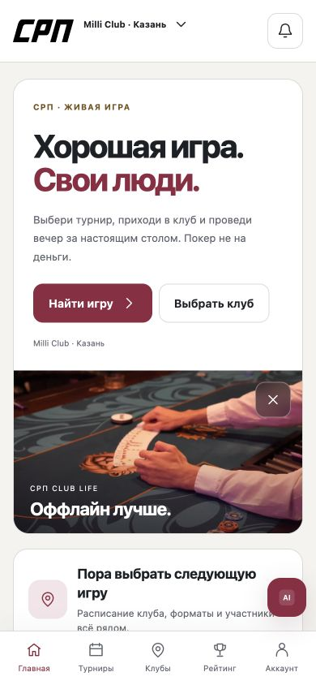
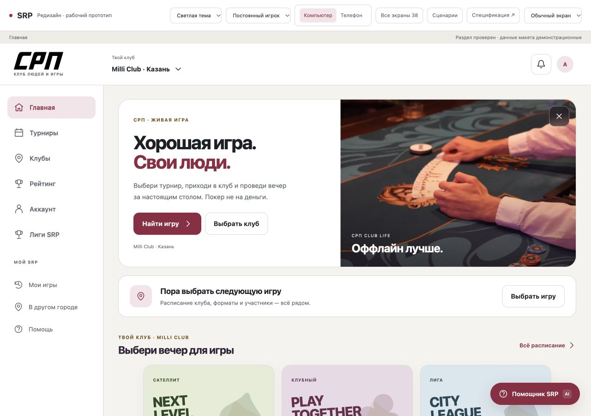

Живая игра.
Свои люди.
Клуб, вечер за столом и твой прогресс. Понятное приложение с атмосферой настоящей игры — от первого входа до следующего турнира.

Пять сценариев игрока
Атмосфера клуба, регистрация и первый понятный шаг.
02 · ИГРАВыбрать вечерНайти турнир, посмотреть условия и пройти демонстрацию записи.
03 · ПОЕЗДКАДругой город — свой клубСправочник городов, карта, маршрут и план посещения.
04 · ПРОГРЕССУвидеть свою историюМеста, результаты, достижения и рейтинг без лишнего шума.
05 · ВОЗВРАЩЕНИЕНе пропустить игруВыбор уведомлений и демонстрация напоминания.
КАТАЛОГ МАКЕТОВПосмотреть все страницыКнопки «Все экраны», «Сценарии», переключение устройства и состояния.
Это интерактивный дизайн, а не рабочий сервис. Записи, аккаунт, помощник и уведомления демонстрационные; реальный профиль SRP не меняется.
Место для игры, а не тесная рамка

Две полноценные темы
Пакет для разработчика
Цели и состояния каждой страницы, токены, поведение компонентов, адаптив и план проверки с игроками.
Figma: 76 исходных редактируемых экранов. Дальнейшую компонентную сборку остановил лимит Starter; HTML содержит актуальные обе темы и последние исправления. Гостевые формы и отдельные серверные состояния нужно подтвердить до реализации.